Ортодонтія · журнал «ДентАрт» 2021 №1
Лікування вертикальної різцевої дезоклюзії із застосуванням мікрогвинтів
CORRECTION OF ANTERIOR OPEN BITE USING MICROSCREW IMPLANTS
Відкритий прикус – одна з найскладніших форм аномалій оклюзії для досягнення стабільного і довготермінового результату. Поняття відкритого прикусу як форми аномалії оклюзії запровадив Caravelli (1842).1 Однак тривалий час йому не було дано чіткого визначення, і багато авторів трактували його на свій лад.
Subtenly і співавт. (1964) запропонували називати терміном «відкритий прикус» відсутність контактів між зубними рядами в передній чи бічній ділянці.2 Moyer's (1972) на основі цефалометричного аналізу розподілив відкритий прикус на просту і комбіновану форми. Проста, або дентальна, пов'язана винятково з відсутністю змикання в зоні певних зубів внаслідок місцевих причин. Відхилення від норми лицьового скелета немає.3 Комбінована, або скелетна, представлена змінами середніх значень у вертикальній і сагітальній площині. K. Yamguchi (2010), окрім дентоальвеолярного, виділив кілька типів скелетного прикусу: 2-й – задня ротація нижньої щелепи, 3-й – зворотна ротація верхньої щелепи і задня нижньої.4
У вітчизняній літературі замість терміну «відкритий прикус» в основному використовується визначення вертикальна різцева дезоклюзія.
Етіологічними чинниками виникнення вертикальної різцевої дезоклюзії найчастіше є місцеві причини і генетична схильність до вертикального типу росту.5 Патогенез пов'язаний з надмірним прорізуванням молярів, в основному верхньої щелепи, а також зайвим вертикальним ростом дентоальвеолярної ділянки в бічних відділах. У результаті спостерігається задня ротація нижньої щелепи, що сприяє розвитку відкритого прикусу. Висока головна тяга і транспалатальна дуга, багатопетльова механіка (БПД) з вертикальними еластиком – одні з методів, використовуваних для усунення надмірного прорізування задніх зубів.6,7 Але вони не завжди гарантують результат, оскільки ефективні за відповідального ставлення пацієнтів до лікування на знімних системах.
У нашій роботі на прикладі лікування пацієнтки з вертикальною різцевою дезоклюзією ми пропонуємо спосіб інтрузії бічних зубів з використанням для опори мікрогвинтів.
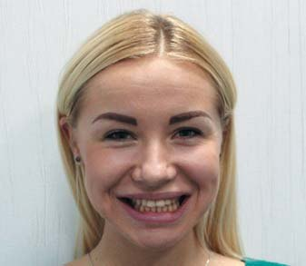
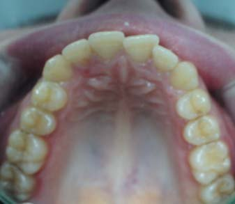
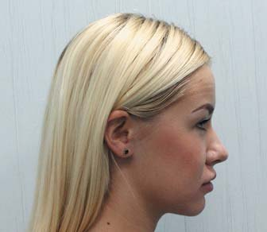
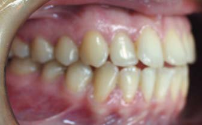
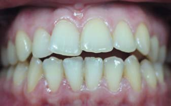
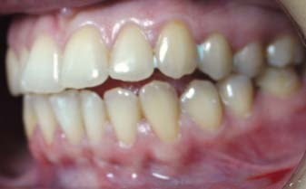
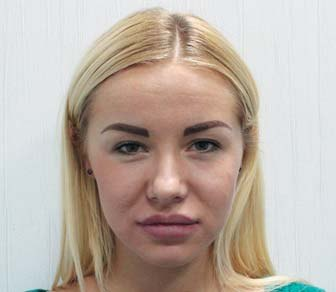
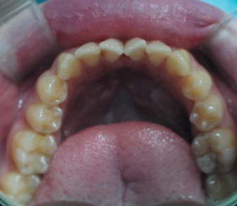
Фото 1. Фотографії пацієнтки до лікування.
Клінічний випадок
У клініку звернулася 27-річна пацієнтка зі скаргами на незмикання передніх зубів (фото 1). При зовнішньому огляді обличчя симетричне, пропорційне, мезіоцефалічний тип. Профіль опуклий, губи в спокої зімкнуті, дихання змішане. Помірна вираженість підборідної і носогубної складок. Інтраоральне обстеження засвідчило: слизова оболонка переддвер'я ротової порожнини в кольорі не змінена, його глибина близько 5 мм, вуздечка язика має нормальне прикріплення, не обмежує його рухливість. На задній стінці глотки ділянок гіпертрофії і запального процесу не спостерігалося. Серединні лінії верхнього і нижнього зубних рядів збігаються. Співвідношення молярів та іклів було I класу за Енглем. У фронтальному відділі мала місце відсутність змикання між зубними рядами близько 3 мм.
При діагностиці в артикуляторі були відсутні іклове ведення з обох боків і фронтальна напрямна. Симптоматики з боку скронево-нижньощелепного суглоба (СНЩС) не було. Аналіз гіпсових моделей виявив дефіцит простору на верхній зубній дузі 2 мм, на нижній зубній дузі – 3 мм, оклюзійна крива Шпеє – 2 мм.
На ортопантомограмі резорбції і запальних змін не було (фото 2).
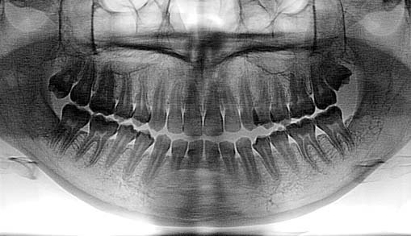
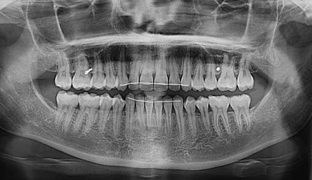
Фото 2. Ортопантомограма до і після лікування.
Розшифрування телерентгенографії (ТРГ) до лікування в бічній проєкції показало скелетний I клас, кут ANB – 2° (утворений найглибшим краєм на верхній щелепі – точкою А, з'єднанням носо-лобного шва – точкою Nа і найглибшою виїмкою на нижній щелепі – точкою В), SNA – 80° (кут між краніальною площиною SN і точкою А на верхній щелепі), SNB – 78° (кут, побудований перетином площиною SN і точкою В на нижній щелепі; фото 3). Нижньощелепний кут FMA був 25° (утворений нижньощелепною площиною – FH).
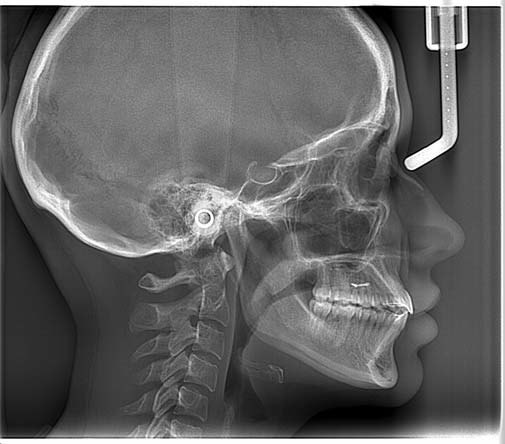
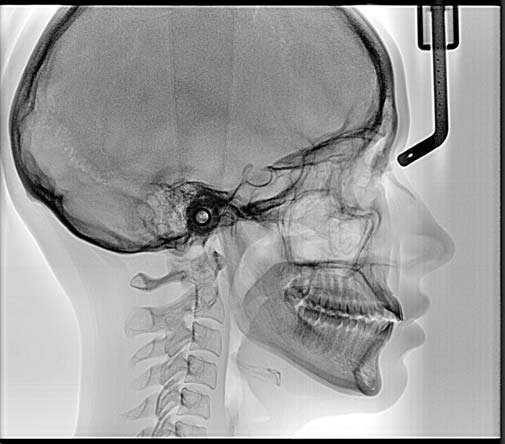
Фото 3. Телерентгенографія до і після лікування.
Нахил верхніх різців U1 до FH (кут, утворений віссю верхніх центральних різців U1 до FH) дорівнює 125°. IMPA був збільшений до 100° (кут між віссю нижніх центральних різців і нижньощелепною площиною). Occ P до FH (кут між оклюзійною площиною і FH) дорівнював 13°. Відношення передньої оклюзійної висоти до задньої – індекс PFH/AFH – 0,8. Z-angle був 77° (таблиця 1).
| Цефалометричні кути (°) | Середні значення | До лікування | Після лікування |
|---|---|---|---|
| SNA | 82 | 80 | 81 |
| SNB | 80 | 78 | 79 |
| ANB | 2 | 2 | 2 |
| FMA | 25 | 25 | 24 |
| PFH/AFH | 0,8 | 0,8 | 0,7 |
| FH до Occ P | 10 | 13 | 11 |
| U1 до FH | 114 | 125 | 118 |
| IMPA | 90 | 100 | 99 |
| Z-аngle | 75 | 77 | 79 |
На основі даних клінічних обстежень, антропометричного дослідження моделей щелеп, використання додаткових спеціальних методів дослідження – ТРГ у бічній проєкції та ортопантомограми – було поставлено діагноз: нейтральний тип росту лицьового скелета, скелетний I клас, співвідношення молярів та іклів I класу за Енглем, вертикальна різцева дезоклюзія.
Запропоновано кілька варіантів лікування. Перший передбачав застосування БПД-механіки, заснованої на інтрузії бічних зубів за допомогою петель L-подібної форми. При цьому рекомендовано постійне носіння вертикальних передніх еластиків. Другий, альтернативний лікувальний план – інтрузія верхніх бічних зубів з опорою на мікрогвинти. Пацієнтка обрала цей варіант лікування.
Установлено незнімну апаратуру (пропис «Рот») c пазом 0,22 дюйма і фіксованою первинною нікель-титановою круглою дугою розміром 0,14 дюйма, потім 0,16 і прямокутною – 0,16-0,25 дюйма. Після вирівнювання зубних дуг установлено повнорозмірну сталеву прямокутну дугу 0,21-0,25 дюйма. Перед інтрузією на дузі сформовані негативні торкові вигини III порядку. У міжкореневий простір між другими і першими молярами на верхній щелепі в діагональному напрямку під кутом 60° до поверхні кістки встановлено 2 мікрогвинти (товщиною 1,5 мм і довжиною 7 мм). Інтрузію бічних зубів робили, використовуючи еластичний ланцюжок із силою 150 Г, фіксуючи його від головок мікрогвинтів навколо дуги в зоні премолярів і перших молярів (фото 4). Під час кожного візиту пацієнтки (раз на місяць) робили його заміну до змикання фронтальних зубів.
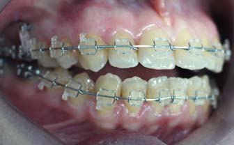
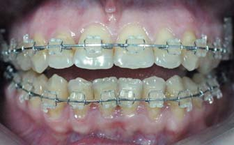
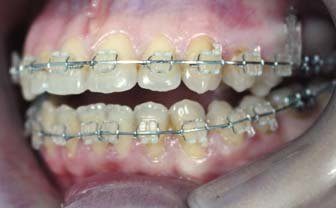
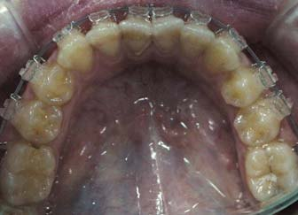
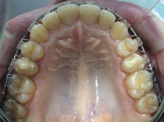
Фото 4. Встановлено 2 мікрогвинти на верхній щелепі у міжкореневий простір між першими молярами і другими премолярами.
Результати лікування
Незнімну апаратуру зняли через 12 місяців від початку лікування. Слід відзначити поліпшення лицьового профілю на фотографії обличчя, на інтраоральних знімках зубні дуги вирівняні (фото 5). Аналіз гіпсових моделей засвідчив правильні співвідношення різців у сагітальній і вертикальній площинах. Співвідношення по іклах і молярах залишалося I класу за Енглем, відзначається збіг середньої лінії на верхньому і нижньому зубних рядах.
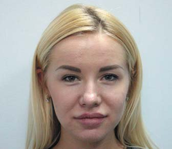
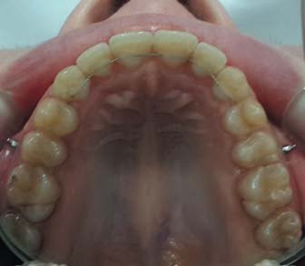

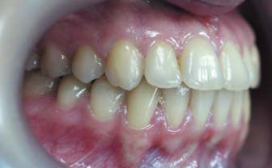
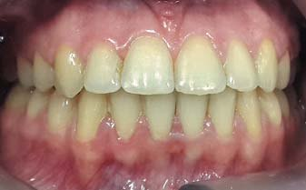
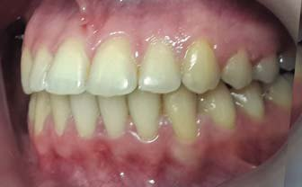
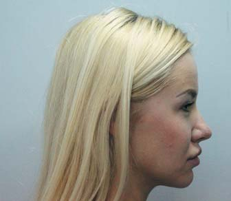
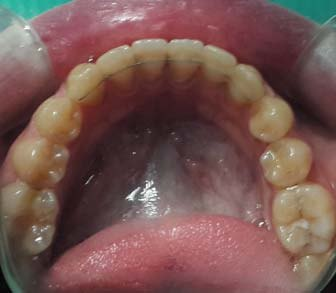
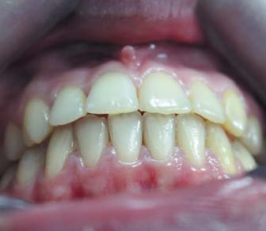
Фото 5. Фотографії пацієнтки після лікування.
При діагностиці в артикуляторі у стані спокою були виявлені щільний міжгорбиковий контакт між зубними рядами, відсутність передчасних контактів при бічних рухах нижньої щелепи, фронтальна спрямовуюча та іклове ведення з обох боків.
ТРГ у бічній проєкції після лікування встановила незначну зміну лицьових ознак: Z-angle збільшений до 79°; кут ANB 2°; кут FMA змінився, перед лікуванням він був 25°. Кут U1 до FH зменшився до 118°, IMPA відповідав 99°. Індекс PFH/AFH дорівнював 0,7. При накладенні цефалометричних обрисовок до і після лікування відзначаються інтрузія верхніх бічних зубів, ротація нижньої щелепи проти годинникової стрілки, зміна нахилу різців (рис. 1).
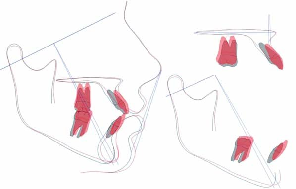
Через рік ретенції
Через рік ретенції при клінічному огляді був відсутній рецидив, спостерігалася стабільність раніше отриманих результатів. Співвідношення по іклах і молярах – I класу за Енглем. Не було скупченості зубів у фронтальній ділянці на верхньому і нижньому зубних рядах. Зубні дуги правильної форми, сагітальний зазор і вертикальна оклюзія в нормі. Були відсутні симптоми з боку скронево-нижньощелепного суглоба (фото 6).
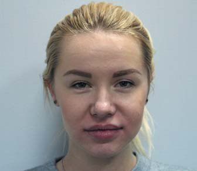
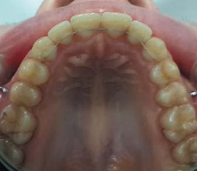
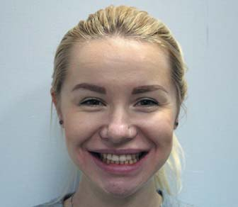
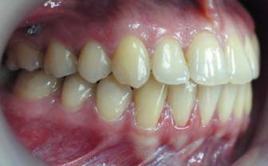
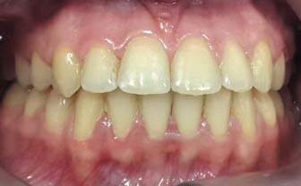
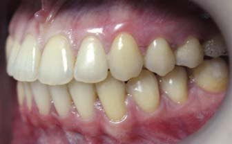
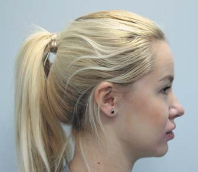
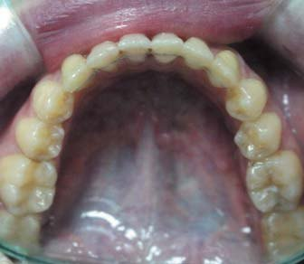
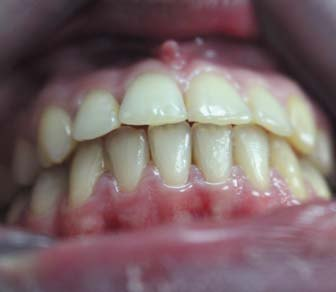
Фото 6. Фото пацієнтки через 1 рік після лікування.
Аналіз і обговорення
Вертикальна різцева дезоклюзія – досить серйозна проблема, незважаючи на значний вибір методів лікування. Це може бути пов'язано з мультифакторною природою її виникнення, труднощами виявлення та елімінації основних причин. У змішаному прикусі її діагностують приблизно у 17% від загальної кількості зубощелепних аномалій. У дорослих поширеність у межах від 1,5% до 11% залежно від географічної зони та етнічної групи.8 У пацієнтів, котрі ростуть, найчастіше спостерігається дентальна форма, зумовлена місцевими факторами. Серед них найчастіше виявляються шкідливі звички смоктання пальця, аномалії форми і положення язика, ковтання з прокладанням його між зубами, травми, ротове дихання. Місцеві фактори, не ізольовані в дитячому віці, здатні призводити до скелетних невідповідностей.9 Скелетна форма може бути також пов'язана зі спадковою схильністю.
У деяких випадках причинний фактор може бути і не встановленим. Загальні захворювання – алергія, гіпертрофія лімфатичної тканини, м'язова гіпотонія, синдроми неврологічних порушень – можуть погіршувати ступінь тяжкості і прогноз консервативного лікування.10
Основний спосіб корекції вертикальної різцевої дезоклюзії у дитячому віці – застосування знімних і незнімних апаратів для розширення верхньої щелепи із заслінкою для язика або шиповидними відростками. У дітей з тенденцією до вертикального росту ці апарати можуть використовуватися разом з підборідною шапочкою (Сhincup) або високою головною тягою (HPHG). Це сприятиме зниженню гоніального кута.11 Розширення верхньої щелепи дає достатньо простору для верхнього положення язика. Заслінка усуває головний місцевий етіологічний фактор – прокладання язика між зубами при ковтанні. Після розширення заслінка може бути видалена, апарат на верхній щелепі може залишатися у ротовій порожнині у вигляді ретенційного. Після чого потрібен апарат із шиповидними відростками на язичну поверхню нижнього зубного ряду, який залишає верхню зону вільною для зміни позиції язика. У випадках смоктання пальця потрібен подібний незнімний апарат з кільцями на верхню щелепу.
Слід зазначити, що використання незнімної палатальної або лінгвальної дуги на кільцях із шипованими відростками не викликає загального дискомфорту. Такий же період адаптації, як і при застосуванні функціональних або інших фіксуючих апаратів.12 Невеликі за ступенем тяжкості форми вертикальної різцевої дезоклюзії можуть бути вилікувані при трансформації змішаного прикусу в постійний. Складніші потребуватимуть комплексного лікування у постійній оклюзії.
Основна увага у пацієнтів з переднім відкритим прикусом повинна звертатися на контроль вертикальної позиції верхніх і нижніх молярів, профілактику їх екструзії. Встановлено, що 1 мм їх висунення збільшує вертикальну відстань між різцями близько 2 мм. Необґрунтоване призначення еластичних тяг при лікуванні технікою прямої дуги здатне вертикалізувати моляри до 4 мм. Пошуки ефективних методів для їх інтрузії або контролю вертикальної позиції тривають.13
З метою інтрузії бічних зубів Kim (1987) розробив техніку багатопетльової дуги (MEAW), яка становить собою ряд петель L-подібної форми, що розташовуються між зубами. Для усунення вертикальної різцевої дезоклюзії кожна петля нахиляється дистально на верхньому і нижньому зубних рядах. Разом з цим рекомендовано носіння вертикальних передніх еластиків.14 Завдяки цьому відбувається ротація верхньощелепної оклюзійної площини за годинниковою стрілкою і нижньощелепної у зворотному напрямку. Внаслідок цього між верхніми і нижніми різцями встановлюються контакти.
Однак при лікуванні петлями MEAW багато дослідників відзначали збільшення ротації нижньощелепної площини.15 Донині немає єдиної думки з приводу вертикального положення молярів після лікування. Серед тих, хто вивчав це питання, тільки Кім виявив інтрузію молярів. Його дослідження базувалися на оцінці цефалометричного аналізу 2D зображень. Недавні дослідження перевіряли дані Кіма, оцінюючи суперімпозицію у 2D і 3D проєкціях. Автори вказали, що на зіставленні латеральних ТРГ у всіх пацієнтів після лікування спостерігалася інтрузія молярів. Але локальна суперпозиція в 3D форматі виявила їх екструзію.16 Це пов'язують з їх дистальним нахилом, внаслідок чого мезіальні горбики стають вищими. Таким чином, моляри незначно виступають над оклюзійною площиною, ротируючи нижньощелепну площину назад і вниз. Отже, якщо інтрузія і виявляється при зіставленні телерентгенограм у бічній проєкції, вона мінімальна. Або ж пов'язана з неточностями обчислень, оскільки відбувається накладання і оцінка тривимірного об'єкта у двовимірному просторі.17
Оцінка фронтальних зубів до і після лікування на бічних цефалограмах виявила певні зміни їх положення. Зменшення вертикальної різцевої дезоклюзії відбувалося за рахунок екструзії різців при носінні вертикальних еластичних тяг. За рахунок цього вони встановлювалися в контакти. Було виявлено, що при лікуванні відкритого прикусу 4 мм технікою БПД у пацієнтів із завершеним ростом екструзія верхніх різців становила 1,29 мм, нижніх – 1,86 мм.18
Узявши за основу філософію Кіма, ряд авторів розвинули альтернативну техніку із застосуванням реверсивних прямокутних нітінолових дуг замість MEAW петель. Використання таких дуг разом з передніми вертикальними еластиками продемонструвало результати, подібні до БПД-механіки. Ця методика більш гігієнічна через відсутність петель, не вимагає високих мануальних навичок і спеціальних інструментів для згинання, менша іритація слизової оболонки. Зменшення вертикальної відстані між різцями відбувалося з гарним вертикальним контролем бічних зубів.19
Видалення премолярів або перших молярів може бути вибором при вертикальній різцевій дезоклюзії, для усунення вертикальної сходинки. Показання для лікування з видаленням – наявність у пацієнта випинання губ, значної скупченості, надмірного вестибулярного нахилу верхніх і нижніх центральних різців. Мезіальне переміщення молярів після видалення других премолярів сприяє зниженню вертикального розміру і передній ротації нижньої щелепи.
Поява тимчасових анкоражних систем розширила можливості ортодонтичного лікування, інтрузія молярів верхньої і нижньої щелеп стала можливою без тривалого процесу згинання дуг, носіння еластиків і HPHG. Мікрогвинти використовуються набагато частіше, ніж мініпластини, з огляду на їх мінімальний хірургічний вплив – не потрібні розсікання слизової оболонки і відкидання клаптя для установки, повторний хірургічний етап для видалення.
Існує кілька методів інтрузії верхніх молярів з опорою на мікрогвинти. Локальна інтрузія, коли повнорозмірна сталева дуга не підв'язана до всіх зубів, має обмежений характер, оскільки важко виконати ефективне забивання молярів, забезпечити необхідне змикання зубних рядів без контролю передніх зубів. Результатом можуть бути недостатні функціональні напрямні при розмиканні, передчасні контакти, відсутність лицьової естетики. У нашому клінічному випадку застосовувалася повнорозмірна сталева дуга з фіксацією брекетів на всі зуби – мікрогвинти були встановлені лише вестибулярно. Перед інтрузією в бічних ділянках на дузі сформували негативні торкові вигини III порядку. Це давало можливість нівелювати зростаючий позитивний торк молярів внаслідок односторонньої вестибулярної тяги. Крім вигинів III порядку, вестибуло-оральне положення задніх зубів можна контролювати піднебінним бюгелем з кільцями на перших молярах. У складніших випадках потрібно встановлювати мікрогвинти на обох поверхнях – щічній і піднебінній. Еластичний ланцюжок буде прикріплений з двох боків від мікрогвинтів через оклюзійну поверхню. Цей метод має гарний контроль інклинації під час інтрузії, бо інтрузивна сила поширюється рівномірніше з обох боків.
Гарні результати були отримані при використанні мікрогвинтів з транспалатальною дугою, фіксованою до перших молярів верхньої щелепи на відстані 5 мм від слизової оболонки. Для інтрузії від мікрогвинтів до палатальної дуги з кожного боку кріпилися закриваючі нітінолові пружини. Інтрузивна сила одночасно діяла зі щічного і палатального боків. Крім того, пацієнтові було рекомендовано язиком натискати на дугу протягом дня для забивання бічних зубів, до повного змикання різців.20
Ключове питання при лікуванні вертикальної різцевої дезоклюзії – пошук оптимальної сили докладання від мікрогвинтів і рівень інтрузії бічних зубів. У зв'язку з різною клінічною картиною і ступенем тяжкості не існує абсолютно точних даних, яка саме величина інтрузивної сили забезпечує оптимальний результат. Прийнято вважати, що для інтрузії молярів вона може перебувати в діапазоні від 150 Г до 500 Г.21 Клінічні спостереження засвідчили недостатність зусилля близько 100 Г навіть для легкого ступеня зубоальвеолярної форми. Обираючи інтрузійну силу, ліпше дотримуватися рекомендацій Schwarz. Він встановив, що сили 20 Г цілком достатньо для інтрузії одного кореня. Таким чином, сила близько 150 Г є біологічно толерантною і достатньою для ефективної інтрузії бічних зубів верхньої щелепи. При використанні сегментарної механіки зусилля, що докладається, має бути не менше 200 Г. У випадках поєднання вертикальної скелетної і зубоальвеолярної форми потрібне використання сили не менше 300 Г для безперервної інтрузії.22 Ортодонтичні сили вище 400 Г практично не застосовуються для забивання з опорою на мікрогвинти. Такий порядок сил застосовується з позаротовою тягою або мініпластинами. Однак таке зусилля може викликати неконтрольовану резорбцію коренів інтрузованих зубів.
На сьогодні немає досліджень, які підтверджують взаємозв'язок між застосованою силою і величиною інтрузії. Дві групи авторів, використовуючи силу 150 Г, отримали приблизно однакові показники – 2,3 і 2,8 мм – інтрузії молярів.23,24 Такий клінічний результат був отриманий із зусиллям 200 Г.25 У подібній клінічній ситуації, але із силою близько 400 Г, була досягнута інтрузія близько 3,37 мм.26 Це можна пояснити використанням мініпластин у комбінації з акриловою шиною і транспалатальною дугою, які могли посилити інтрузивний ефект. Таким чином, сила тяги не впливає на ступінь інтрузії бічних зубів верхньої щелепи.
Інтрузія з опорою на мікрогвинти за I класом змикання молярів змінює нахил лише дистального краю верхньої оклюзійної площини. Зміни вертикальної позиції центральних різців верхньої щелепи не відбувається, бо вертикальні еластичні тяги на цьому етапі інтрузії не застосовуються. Усунення вертикальної сходинки верхніх молярів призводить до ротації нижньої щелепи вперед і вгору, до контакту нижніх і верхніх різців. Вертикальні еластики призначаються на завершальному етапі (тривалість застосування не більше 1 місяця) з метою створення максимального міжгорбикового контакту в бічному відділі та ідеального – у фронтальному.
Співвідношення між іклами та молярами за II класом з ретрузивною нижньою щелепою та опуклим профілем – найсприятливіша форма для лікування цим методом. Зміщення нижньої щелепи проти годинникової стрілки викликає переднє переміщення підборіддя, зменшення сагітального уступу з одночасним усуненням різцевої дезоклюзії. Вертикальні передні еластики слід використовувати як протягом інтрузії бічних зубів, так і на фінішних етапах формування оклюзійних контактів. Ретракція і екструзія різців служать компенсацією скелетних невідповідностей у сагітальній площині.
До лікування пацієнтів з класом III слід ставитися з особливою обережністю. У результаті ротації нижньої щелепи може спостерігатися погіршення профілю – він більш увігнутий. Переміщення нижньої щелепи вперед може погіршити співвідношення між молярами. Контролювати небажані ефекти можна тотальною дисталізацією нижнього зубного ряду. Однак 2-фазний протокол значно подовжує терміни ортодонтичного лікування, і зростає його складність. У таких випадках більш ефективне застосування БПД-механіки. Рекомендовано на фінішному етапі використання еластичних тяг, слід робити кілька вертикальних розрізів пьєзотомом у зоні фронтальної ділянки верхньої щелепи.
У випадках скелетної форми з вираженим вертикальним ростом у бічних ділянках, коли застосування ортодонтичних методів недостатньо для змикання фронтальних зубів і поліпшення профілю, потрібна ортогнатична хірургія.
Висновки
- Інтрузія молярів з опорою на мікрогвинти не вимагає особливих мануальних навичок для згинання дуг, зменшує час для активації апаратури, значно скорочує терміни лікування.
- Інтрузійна сила близько 150 Г є біологічно толерантною і достатньою для ефективної інтрузії бічних зубів верхньої щелепи.
- Інтрузія молярів верхньої щелепи викликає ротацію нижньої щелепи проти годинникової стрілки, переднє переміщення підборіддя, зменшення сагітального уступу, поліпшення профілю.
- У випадках вертикальної різцевої дезоклюзії, ускладненої змиканням за III класом, інтрузія верхніх молярів призводить до небажаної ротації нижньої щелепи. Цей метод не рекомендований для лікування такої форми аномалії оклюзії.
Література
- Parker J. H. The interception of the open bite in the early growth period // Angle Orthod. –1971. – №41 (1). – P. 24-44.
- Subtelny H. D., Sakuda M. Open bite: diagnosis and treatment // Am J Orthod. – 1964. – №50 (5). – P. 337-58.
- Moyers R. E. Orthodontia. 4th ed. Trad. coord. Por Aloysio Cariello. Rio de Janeiro: Guanabara Koogan. – 1991.
- Yamguchi K., Nanda R. Current Therapy in Orthodontic. – 2010.
- Proffit W. R. Contemporary Orthodontics. 3rd ed. Mosby Publishing, St Louis. – 2000. – P. 13.
- Pedrazzi E. Treating the open bite // J Gen Orthod. 1997. – №8. – P. 5-16.
- Kim Y. H. Anterior open bite and its treatment with multiloop Edgewise archwire // Angle Orthod. – 1987. – №57. – P. 290-321.
- Cozza P., Baccetti T., Franchi L., Mucedero M., Polimeni A. Sucking habits and facial hyperdivergency as risk factors for anterior open bite in the mixed dentition // Am J Orthod Dentofacial Orthop. – 2005. – №128 (4). – P. 517-9.
- Tausche E., Luck O., Harzer W. Prevalence of malocclusions in the early mixed dentition and orthodontic treatment need // Eur J Orthod. – 2004. – №26(3). – P. 237-244.
- Chang Young, Cheol Moon Seong. Cephalometric evaluation of the anterior open bite treatment. AJO, 1999.
- Nielson I. L. Vertical malocclusions, etiology, development, diagnosis and some aspects of treatment //Angle orthodontist. – 1991. – №61. – P. 247-257.
- Torres F. C, Almeida R. R., Almeida-Pedrin R. R., Pedrin F., Paranhos L. R. Dentoalveolar comparative study between removable and fixed cribs, associated to chin cup, in anterior open bite treatment // J Appl Oral Sci. – 2012. – №20. – P. 531-537.
- Justus R. Correction of anterior open bite with spurs: long-term stability // World J Orthod. – 2001. – №2. – P. 219-231.
- Woods M. G., Nanda R. S. Intrusion of posterior teeth with magnets. An experiment on non-growing ba-boons // Am J Orthod Dentofacial Orthop. – 1991. – №100. – P. 393-400.
- Kim Y. H., Han U. K., Lim D. D., Serraon M. L. Stability of anterior openbite correction with multiloop edgewise archwire therapy: a cephalometric follow up study // Am J Orthod Dentofacial Orthop. – 2000. – №118. – P. 43-54.
- Endo T., Kojima K., Kobayashi Y., Shimooka S. Cephalometric evaluation of the anterior open bite non-extraction treatment, using multiloop edgewise archwire therapy // Odontology. – 2006. – №94. – P. 51-58.
- Cruz-Escalante M., Castillo A., Soldevilla L., Janson G., Yatabe M., Zuazol R. Extreme skeletal open bite correction with vertical elastics // Angle Orthod. – 2017. – №87. – P. 911-923.
- Buket E., Kucukkeles N. Three-dimensional evalution of open bite patients treated with anterior elastics and curved archwires // Am J Orthod Dentofacial Orthop. – 2018. – №5. – P. 693-701.
- Ribeiro G., Regis S., Da Cunha Tde M., Sabatoski M., Guariza-Filho O., Tanaka O. Multiloop edgewise archwire in the treatment of a patient with an anterior open bite and a long face // Am J Orthod Dentofacial Orthop. – 2010. – №1. – P. 89-95.
- Enacar A., Ugur T., Toroglu S. A method for correction of open bite. // J Clin Orthod. – 1996. – №30. – P. 709-714.
- Scheffler N. R., Proffit W. R. Miniscrew-supported posterior intrusion for treatment of anterior open bite // J Clin Orthod. – 2014. – №48. – P. 158-168.
- Akan S., Kocadereli I., Aktas A., Tasar F. Effects of maxillary molar intrusion with zygomatic anchorage on the stomatognathic system in anterior open bite patients // Eur J Orthod. – 2011. – №35. – P. 93-102.
- de Oliveira T. F. M., Nakao C. Y., Goncalves J. R., Santos-Pinto A. Maxillary molar intrusion with zygomatic anchorage in open bite treatment: lateral and oblique cephalometric evaluation // Oral Maxillofac Surg. – 2015. – №19. – P. 71-77.
- Carrillo R., Rossouw P. E., Franco P. F., Opperman L. A., Buschang P. H. Intrusion of multiradicular teeth and related root resorption with mini-screw implant anchorage: a radiographic evaluation // Am J Orthod Dentofacial Orthop. – 2007. – №132. – P. 647-655.
- Kravitz N. D., Kusnoto B., Tsay T. P., Hohlt W. F. The use of temporary anchorage devices for molar intrusion // J Am Dent Assoc. – 2007. – №138. – P. 56-64.
- Marzouk E., Abdallah E., El-Kenany W. Molar intrusion in open-bite adults using zygomatic miniplates // Int J Orthod. – 2015. – №26. – P. 47-54.
- Kato S., Kato M. Intrusion of molars with implants as anchorage: a report of two cases // Clin Implant Dent Related Res. – 2006. – №8. – P. 100-106.